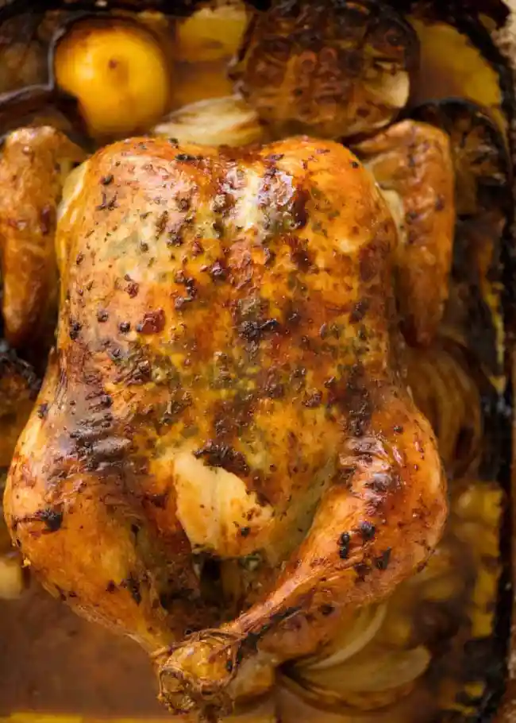

Roast Chicken

Description
A delicious chicken roast featuring herb and garlic butter
Ingredients
- 1.75 - 2 kg / 3.5 - 4lb whole chicken , patted dry
- Salt and pepper
- 2 tbs olive oil
- 1 lemon quartered
- 3 rosemart sprigs
Butter
- 100g unsalted butter
- 3 garlic cloves
- 1 tbps sage
- 2 tbs rosemary
- 1 tbsp parsley
- 1/2 tsp salt and black pepper
Steps
- Take the chicken out of the fridge 30 minutes before cooking.
- Preheat oven to 220C/450F (standard) or 200C/430F (fan/convection). Put shelf in the middle.
- Mix together Butter ingredients. Add juice from 2 wedges of lemon.
- Place chicken in a roasting pan. Use a dessert spoon to loosen skin from chicken (see video). Do the top (the breast) and the drumsticks not the underside.
- Prop chicken upright, drizzle butter under skin, using most of the garlic/herb sludge, but saving a bit of butter for the skin (Note 3).
- Drizzle / smear remaining butter all over surface of the chicken. Squeeze over juice of 2 lemon wedges.
- Stuff used lemon wedges and rosemary inside chicken.
- Tie drumstick ends with string and tuck wing tips under the chicken.
- Sprinkle all over with salt and pepper.
- Place onion and garlic in the pan, place chicken on top. Pour wine around, drizzle chicken with oil.
- ransfer to oven. Roast for 10 minutes, then turn oven down to 180C/350F (all oven types). Roast for a further 1 hr 15 minutes, or until the internal temperature is 75C/165F or until juices run clear when pierced at the join between the drumstick and the body. Baste twice (30 min then at 1 hr), spooning pan juices over skin.
- Rest for 15 minutes – don’t cover, skin becomes wet.